¿Que es GIT?
Git es un sistema de control de versiones distribuido, lo que significa que un clon local del proyecto es un repositorio de control de versiones completo. Estos repositorios locales plenamente funcionales permiten trabajar sin conexión o de forma remota con facilidad. Los desarrolladores confirman su trabajo localmente y, a continuación, sincronizan su copia del repositorio con la copia en el servidor. Este paradigma es distinto del control de versiones centralizado, donde los clientes deben sincronizar el código con un servidor antes de crear nuevas versiones.
La flexibilidad y popularidad de Git hacen que sea una excelente opción para cualquier equipo. Muchos desarrolladores y graduados universitarios ya saben cómo usar Git. La comunidad de usuarios de Git ha creado recursos para entrenar a desarrolladores y la popularidad de Git facilita la ayuda cuando sea necesario. Casi todos los entornos de desarrollo tienen compatibilidad con Git y las herramientas de línea de comandos de Git implementadas en cada sistema operativo principal.
Conceptos básicos de Git:
Cada vez que se guarda el trabajo, Git crea una confirmación. Una confirmación es una instantánea de todos los archivos en un momento dado. Si un archivo no ha cambiado de una confirmación a la siguiente, Git usa el archivo almacenado anteriormente. Este diseño difiere de otros sistemas que almacenan una versión inicial de un archivo y mantienen un registro de deltas a lo largo del tiempo.

La metodologia git Flow:
Es el flujo de trabajo más popular y extendido. Se basa en dos ramas principales con una vida infinita. Para cada tarea que se le asigna a un desarrollador se crea una rama feature en la cual se llevará a cabo la tarea. Una vez que ha finalizado, realizará un pull request (validación) contra develop para que validen el código.
Pasamos a detallar las dos ramas principales que se utilizan:
- Master: Contiene el código de producción. Todo el código de desarrollo, a través del uso de releases, se mergea (fusiona) en esta rama en algún momento.
- Develop: Contiene código de pre-producción. Cuando un desarrollador finaliza su feature, lo mergea contra esta rama.

Durante el ciclo de desarrollo, se usan varios tipos de ramas para dar soporte:
- Feature : Por cada tarea que se realiza, se crea una nueva rama para trabajar en ella. Esta rama parte de develop.
- Hotfix: Parte de master. Rama encargada de corregir una incidencia crítica en producción.
- Releases: Parte de develop. Rama encargada de generar valor al producto o proyecto. Contiene el código que se desplegará, y una vez que se han probado las features integradas en la release, se "mergeará" a la rama master.
Pros git Flow:
- Fácil de comprender el flujo de ramas.
- Ideal para productos estables que no requieren de desplegar cambios inmediatamente.
- Muy recomendable cuando el equipo tiene todo tipo de desarrolladores. El control de las features más la release hace que el código no se deteriore.
- Perfecto para productos open-source en los que pueden colaborar todo tipo de desarrolladores.
Contras git Flow:
- No es el más indicado si tu proyecto necesita iterar muy rápido y subir a producción varias veces al día o semana.
- En caso de que el proyecto utilice varias herramientas de integración continua, la rama develop puede convertirse en una rama redundante de master.
- El uso de la rama master como rama protegida. Muchas herramientas de automatización usan la rama master por defecto.
- Gran complejidad en las ramas creadas de hotfix y releases. La integración continua elimina la necesidad de la creación de estas ramas, facilitando el despliegue.
ESTRUCTURA VISUAL:

Porceso realizado en un proyecto con metodolia git Flow:
-En primer lugar el Usuario1 ha creado el repositorio en github con el nombre de "Proyecto sistemas de control de versiones"

-Seguidamente el Usuario1 creará el proyecto en local y lo conectara con el repositorio remoto:
git remote add origin https://github.com/Vicent29/Proyecto-sistemas-de-control-de-versiones.git
-Seguidamente publicará la rama master en local que estará conectada a la rama master del repositorio remoto.
Trabajo USUARIO-1
-A continuación el Usuario1 creará la plantilla de front-end profesional con la plantilla de HTML5 Boilerplate con la que realizará el siguiente proceso:
- npx create-html5-boilerplate new-site
- cd new-site
- npm install
- npm run start

-Seguidamente creará la estructura principal de la página web:
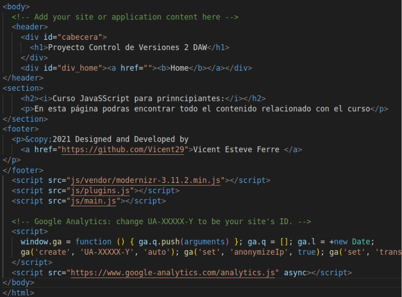 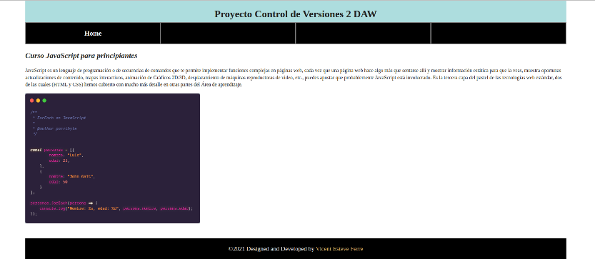-A continuación realizara un commit y subirá el inicio del proyecto al repositorio remoto utilizando los siguientes comandos:
- git add .
- git commit -m "Inicialización del proyecto USUARIO-1"
- git push origin master
-Seguidamente este mismo usuario se encargará de crear 2 hooks para ello utilizaremos la librería husky:
- En primer lugar instalaremos la librería husky con el siguiente comando:
- npm install husky --save-dev
- npx husky install
- En segundo lugar ya tendremos que trabajar con la creación de los hooks:
HOOK preparare-commit-msg:
- Para ellos crearemos el hook preparare-commit-msg para ello vamos a necesitar crearlo y añadirlo:
- npx husky add .husky/preparare-commit-msg
- git add .husky/preparare-commit-msg
- Para este hook queremos que compruebe que siempre que se realice un commit en la rama hotfix exista una persona asignada para verificar que no se rompe nada. Para ello, deberá comprobar que el mensaje de commit contiene la frase “A corregir por: …”.(A continuación tenemos el script utilizado para ello y una pequeña simulación de su funcionamiento)
HOOK post-checkout:
- Para ellos crearemos el hook pre-commit para ello vamos a necesitar crearlo y añadirlo:
- npx husky add .husky/post-checkout
- git add .husky/post-checkout
- Para este hook queremos que muestre por consola un mensaje con un dibujo hecho con caracteres ascii una vez hagamos el checkout de una rama del proyecto.” (a continuación tenemos el ejemplo de su funcionamiento:) 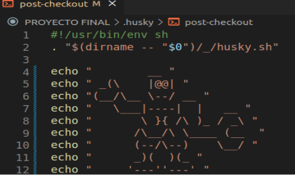 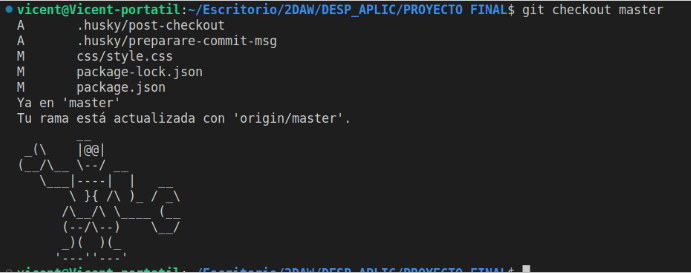

(Deberemos de tener en cuenta que ambos hooks tengan permisos de ejecución ya que es posible que no nos funcionen correctamente por este motivo)
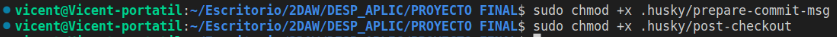-Para finalizar esta primera parte realizaremos un nuevo commit y realizaremos un push en la rama master:
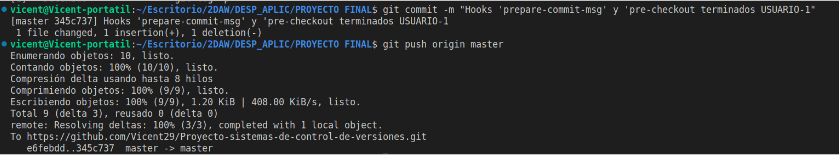-Seguidamente se encargará de crear la rama “develop” a partir de la master, esta rama es la que utilizaremos para desarrollar el proyecto. Además la subiremos al repositorio remoto para que la resta de compañeros puedan trabajar en ella:
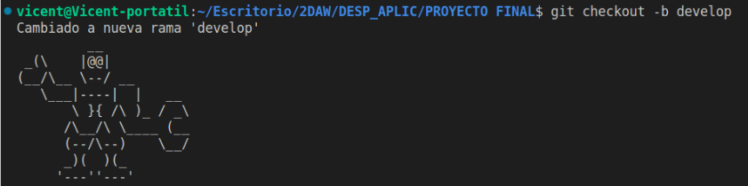 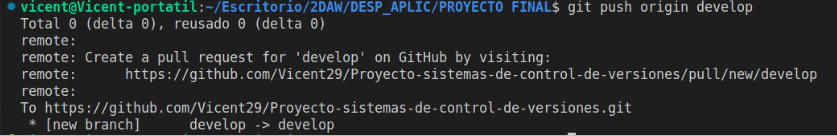Trabajo USUARIO-2
(Para cada mejora o feature sería recomendable crear una “_isuue” con los cambios que se deben realizar aunque por mi parte, solo lo voy a crear para la “feture/atributosHTML” porque lo he pensado cuando ya tenía el hook y la “feature/contenidoHTML” creadas.)
-En primer lugar el Usuario-2 creará un hook el cual se encargará de que antes de cada commit verifique el correcto formato de los archivos html, para conseguir esta funcionalidad en el hook ejecutará el linter eslint aunque tambien podriamos utilizar prettier que no necesita una configuración, para ello utilizaremos los siguientes comandos para instalarlo:
- npm install --save-dev eslint-plugin-html
-Seguidamente hemos configurado el “eslint”, para ello crearemos un archivo llamado “.eslintrc.json” , para realizar la configuración me he ayudado de la siguiente web .
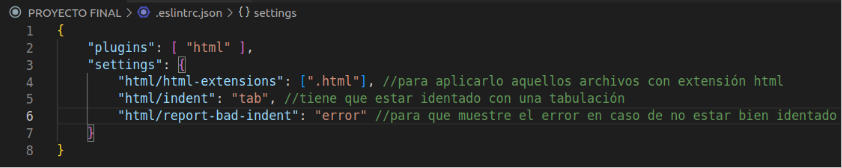-Por último comprobaremos correctamente antes de añadirlo al pre-commit, para ello cambiaremos la identación en el “index.html” y debería detectarlo:
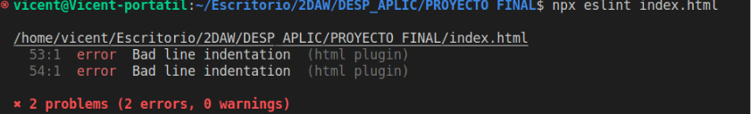-A continuación crearemos el hook de pre-commit el cual se encargará de ejecutar la configuración de eslint:
- npx husky add .husky/pre-commit
- npx husky add .husky/pre-commit
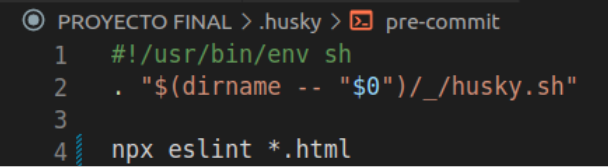
-Una vez terminado toda parte del eslint, realizaremos un push a “develop”
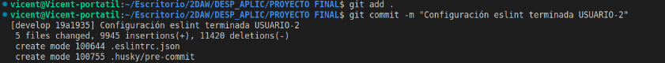 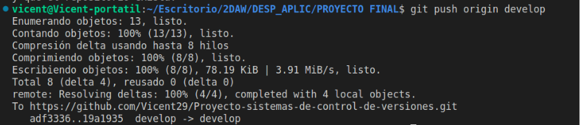-Para este usuario también crearemos 2 features, cada una de ellas llevará su respectivo contenido mejora del código.
- feature/contenidoHTML
- feature/atributosHTML
-Estas 2 features saldrán de la branch de develop, por lo que deberemos de crearlas posicionandonos en develop previamente:
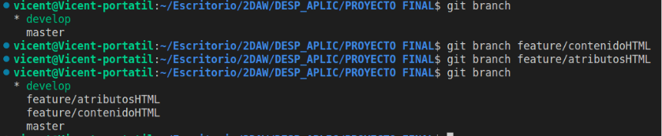Branch feature/contenidoHTML:
-En la branch “feature/contenidoHTML” es la cual se creará la sección de “Modificar contenido HTML”, la cual crearemos una nueva “section” para este contenido y actualizarnos el "nav" de la cabecera:
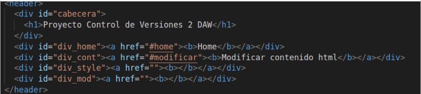 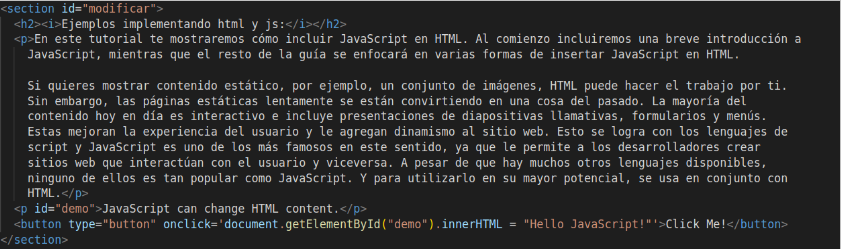 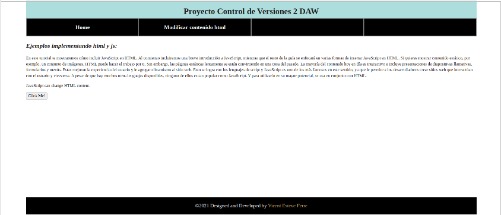-Una vez terminado la feature, deberemos de subirla al repositorio remoto, para ello utilizaremos los comandos de la siguiente imagen:
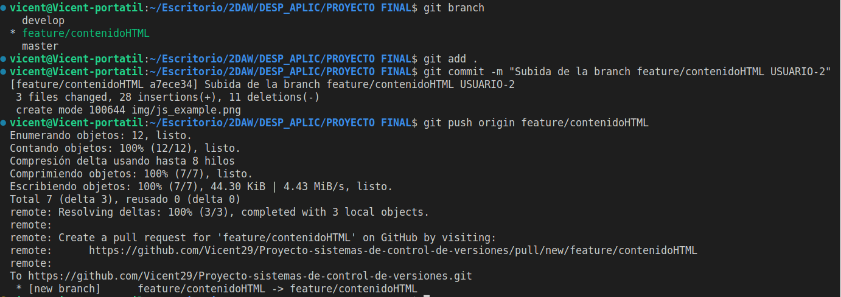-Una vez que la branch “feature/contenidoHTML” se encuentra en el repositorio remoto deberemos de mergearla a la “develop” para ello realizaremos una pull request:
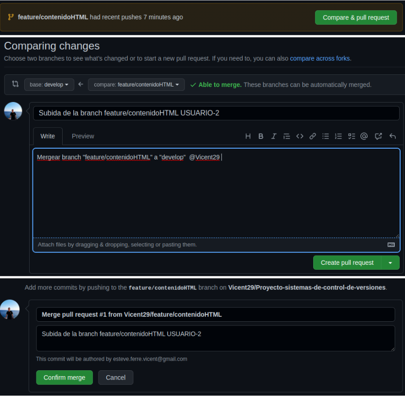-Una vez terminado con la rama “feature/contenidoHTML” eliminaremos la rama ya que la metodología de git Flow recomienda ir borrando aquellas features terminadas para que no haya un exceso de branches innecesarias:
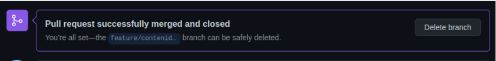-Por otra parte deberemos de hacer un git pull en “develop” para que se actualizan los cambio mercados en el repositorio remoto y borrar la branch en local si lo deseamos.
Branch feature/atributosHTML:
-En primer lugar deberemos de crear un “_issue” con aquellas mejoras que queremos que realiza esta branch para que cuando la mergemos asegurarnos que hemos cumplido todos los requisitos que se plantearon previamente.
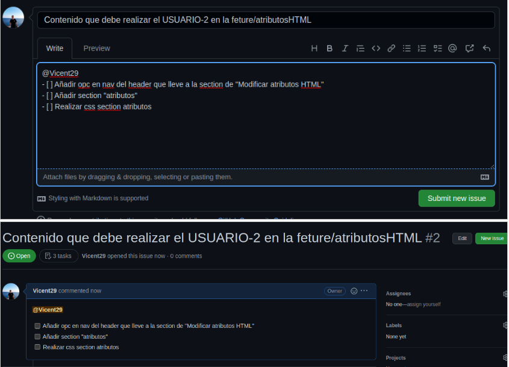-En la branch “feature/contenidoHTML” es la cual se creará la sección de “Modificar atributos HTML”, la cual crearemos una nueva “section” para este contenido y actualizarnos el “nav” de la cabecera:
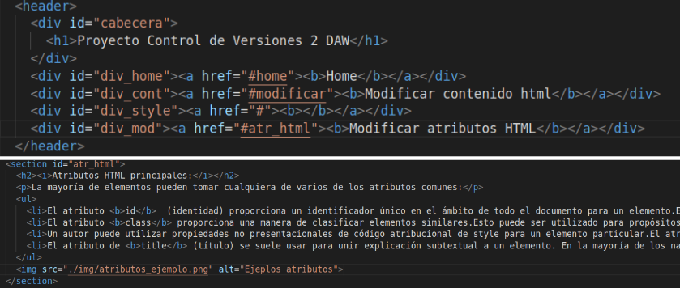 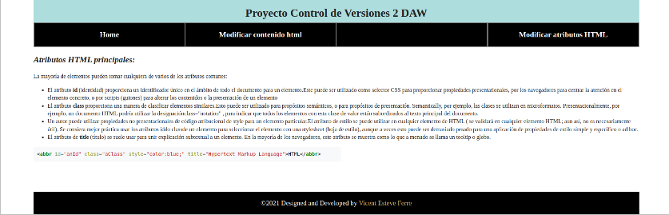-Una vez terminado la feature, deberemos de subirla al repositorio remoto, para ello utilizaremos los comandos de la siguiente imagen:
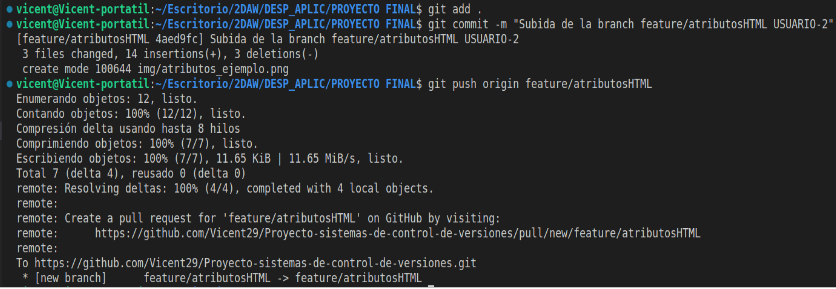-Una vez que la branch “feature/atributosHTML” se encuentra en el repositorio remoto deberemos de mergearla a la “develop” para ello realizaremos una pull request:
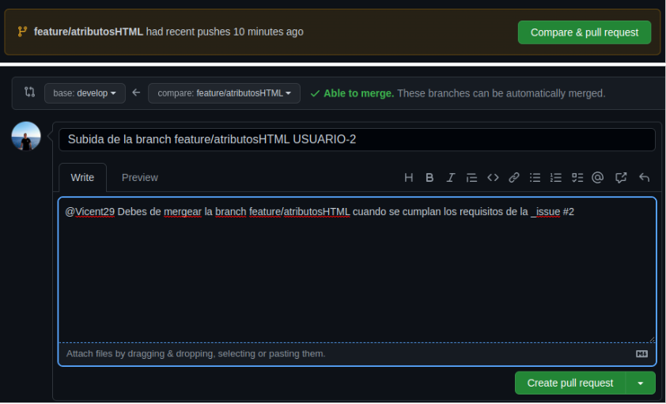 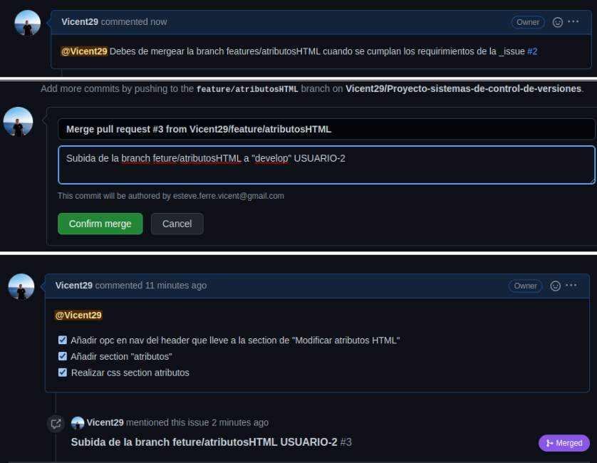-Por último borraremos la branch de “feature/atributosHTML” ya que su funcionalidades ya han sido merengadas a dvelop y su utilidad ya no es necesaria
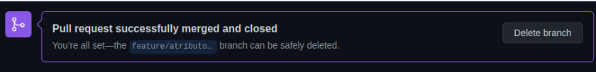-Para finalizar esta feature nos posicionamos en la branch develop y realizaremos un pull para actualizar los cambios
Trabajo USUARIO-3
-En primer lugar deberemos de crear un “_issue” con aquellas mejoras que queremos que realiza esta branch para que cuando la mergemos asegurarnos que hemos cumplido todos los requisitos que se plantearon previamente.
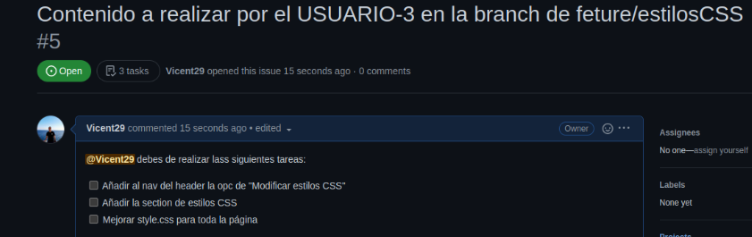Branch feature/estilosCSS:
-Para empezar nos posicionamos en la branch “develop” y realizaremos una nueva branch con el nombre de “feture/estilosCSS” en la cual se creará la sección de “Modificar estilos CSS”, la cual crearemos una nueva “section” para este contenido y actualizarnos el “nav” de la cabecera:
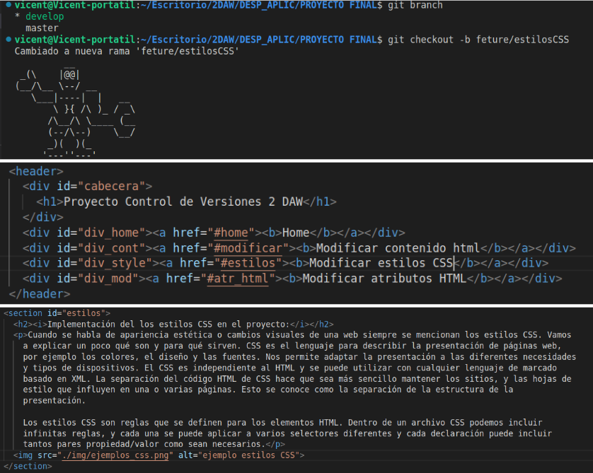 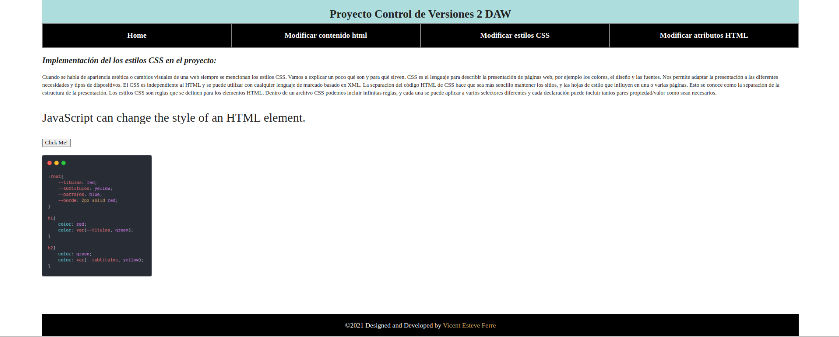-Además le añadiremos algo de CSS a la página completa:
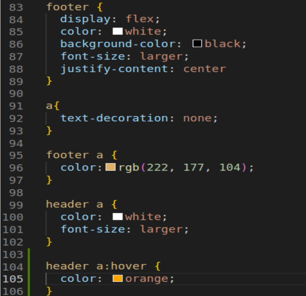-Una vez terminado la feature, deberemos de subirla al repositorio remoto, para ello utilizaremos los comandos de la siguiente imagen:
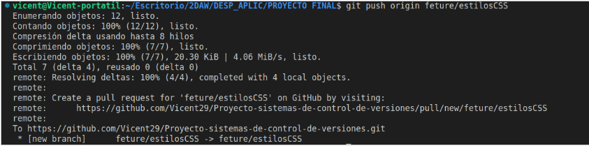-Una vez que la branch “feature/estilosCSS” se encuentra en el repositorio remoto deberemos de mergearla a la “develop” para ello realizaremos una pull request y comprobaremos que cumple con los requisitos implementados en la _issue #5:
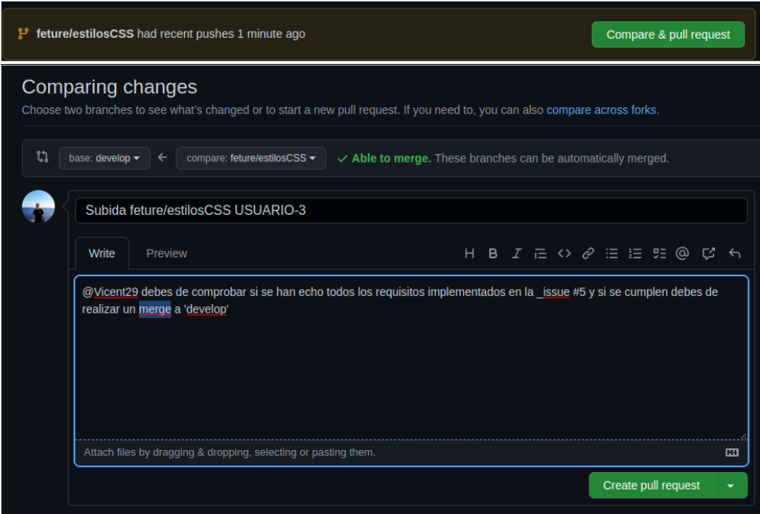 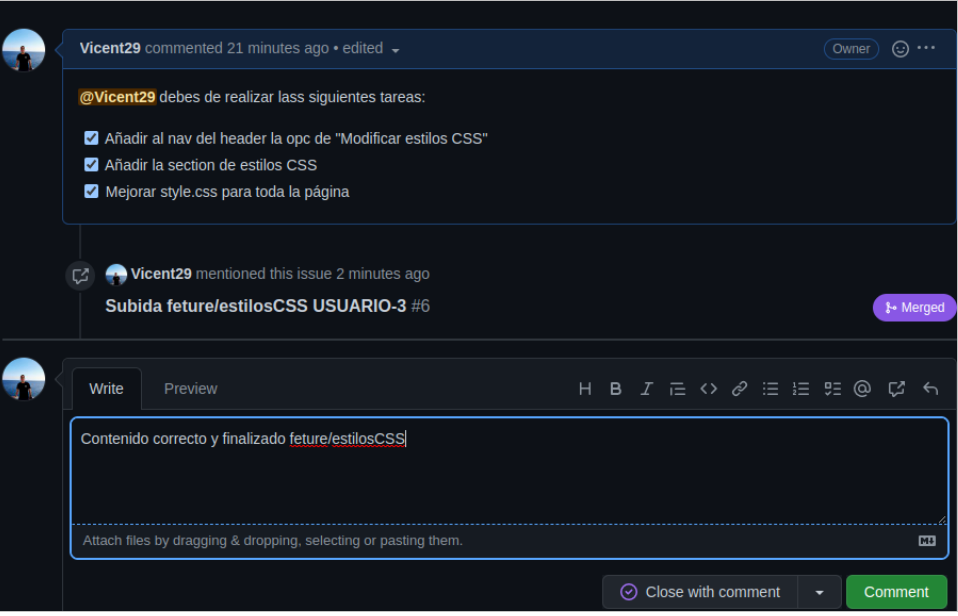 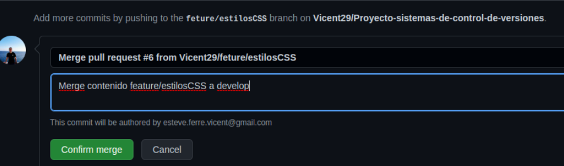-Por último eliminaremos la feture/estilosCSS porque ya no nos resultará útil
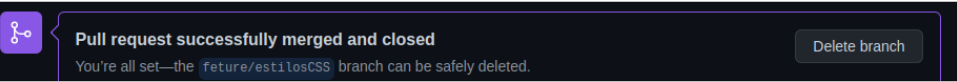-Como siempre cuando terminemos una feture y la mergeamos en el repositorio remoto debemos de hacer un pull en el repositorio local posicionandonos en “develop” para poder tener los mismos cambios tanto en local como en remoto:
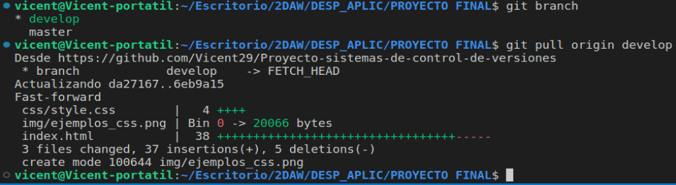Release V1.0:
-Por último el USUARIO-3 también se encargará de crear una nueva release: En primer lugar, nos colocaremos en la rama de “develop” crearemos una nueva branch llamada “Release/v1”
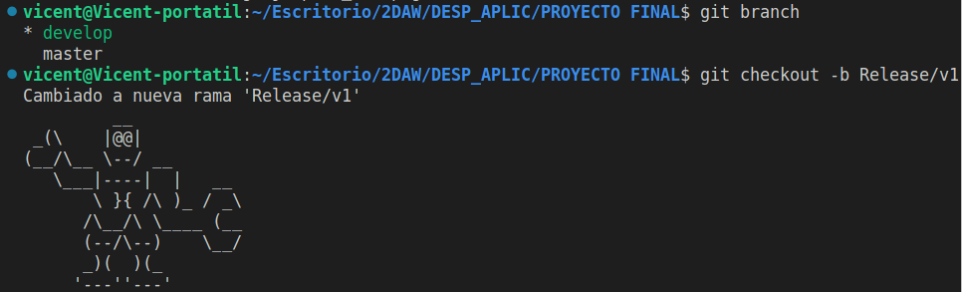A continuación realizaremos un commit con el contenido completo:
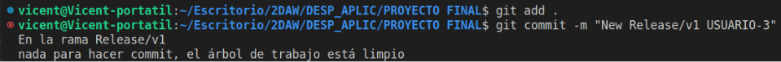En tercer lugar crearemos un tag “v1.0” y se lo añadiremos al commit creado anteriormente (utilizaremos el git log –oneline para saber el id del commit ):
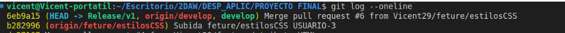Y creamos el tag asignándole el id del commit:
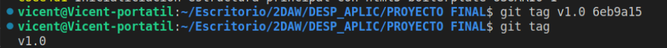Por último subiremos el relase junto con tag al github:
En cuarto lugar en el github realizaremos una “new release” con el tag v1.0:
Para finalizar la parte tendremos que realizar un pull rquest desde la branch de “release/v1” hacía “master” y de “release/v1” hacia “develop” aunque como la tenemos actualizada porque no hemos hecho ningún cambio no será necesario.
En último lugar realizaremos un pull colocandonos en la rama main para actualizar el contenido local del remoto:
Trabajo extra USUARIO-1 / HOTFIX:
-En último lugar el USUARIO-1 quiere realizar una mejoras de la sección del contenido creada por el USUARIO-2. Para ello, crea un hotfix ( hotfix/mejorasV_1_0 ) que efectúa dicha mejora.
Para realizar esta hotfix nos colocaremos en la branch “master” y desde esta crearemos la nueva rama:
Una vez terminado la hotfix, deberemos de subirla al repositorio remoto, para ello utilizaremos los comandos de la siguiente imagen:
He tenido que volverlo hacer porque en él “prepare-commit-msg” la rama la cual comprobaba era “hotfix” y debería de ser hotfix/mejorasV_1_0 por lo que lo hemos corregido y hemos vuelto hacer todo el proceso aunque en github estar repetido
Por último en realizaremos un pull-request de la “hotfix” hacia la “master” y de la “hotfix” a la “develop”:
Cuando tengamos las rama master como la develop actualizadas ya podremos borrar la rama hotfix porque no le daremos más utilidad: